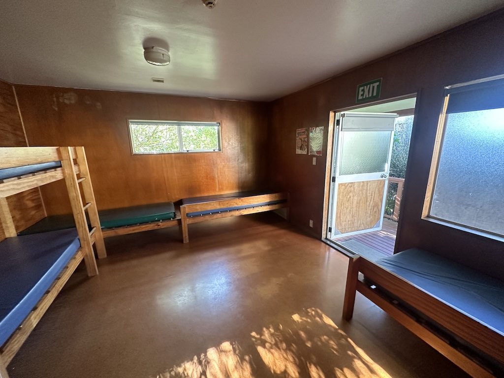

Ruby Retreat is an unconference run by and for the whole programming community!
Picture yourself by the beach with your smartest friends. The air is clear and so is your mind. There's no limit to what you can achieve here.
• Scheming? Certainly.
• Coding? It's likely.
• Enlightenment? Maybe.
• Very high quality catering for all meals over the weekend including dinner on Friday, and breakfast on Monday.
• Non-alcoholic drinks. We will have a large selection of non-alcohol soda and drinks stocked in the fridge throughout the weekend. Coffee and tea will also be available.
• Accommodation (lodge bunk-room style with shared bathrooms) for Friday, Saturday, Sunday nights, small amount of tent spaces available upon request.
• Bus transport to the retreat from Auckland Airport, and we'll return you back again after the retreat.
• The opportunity to meet lots of people in the New Zealand Ruby programming community.
Bus transport from and to Auckland Airport is included in the event ticket. The bus is scheduled to leave Auckland Airport International Terminal at 3:00pm on Friday, 9th May.
Please aim at arriving the airport International Terminal by 2:50pm on Friday where we will meet and head to the bus together. If you are arriving at the domestic terminal, please allow extra time to walk (~15 minutes) or free airport shuttle (every 15 minutes) to get to International Terminal. We will send out more details closer to the event.
If you have to arrive too early or too late on a flight, don't stress out. Please pop in your flight details into the transport form (link contained in your ticket confirmation email) and we will try to arrange a carpool for you.
If you decide to head to Auckland a day before and stay somewhere along the way. Please also fill in the transport form if you would like to join the carpool.
If you are driving, there is plenty of parking vailable at the venue. Please consider taking with you a few flying Rubyists who are early or late for the bus. We will discuss carpooling on Slack closer to the event.
On Monday, 12th May, the bus will leave the venue at 11:00am to head for Auckland Airport. It is safe to assume we will arrive at the airport before 1:00pm. Please plan your out bound flight accordingly.
Absolutely not! While this retreat is run by Rubyists, it is for the whole developer community and there is something here for everyone!
Yes, it is exactly the same event. We just changed the name.
It's a low-structure unconference; activities are driven by the
community. Some suggestions:
• Work on projects.
• Share your work with others.
• Talk through gnarly problems with thoughtful, friendly folks.
• Connect with the developer community.
• Follow your dreams.
For this retreat, we have also organised some talks and workshops in advance. More details will be added soon, including a way to schedule a talk or workshop if you're keen to give one too.
Yes, you are allowed to bring your own alcoholic drinks (BYO) to the retreat. If you are taking the bus from the Airport, we will stop at local supermarket before arriving the venue so you can purchase your alcoholic drinks there. Please do not be intoxicated and no spirits please.
We will also have many non-alcoholic drinks available in the fridge for everyone so you could also enjoy the weekend without being tipsy.

Some bedding. There are only mattresses provided in the dorm rooms. Bring sleeping bags, pillows or blankets, whatever you need to sleep in DOC huts. May in Auckland is still warm enough during the day so short clothes would do, but it can get chill at night so please bring a warm layer or two for the nights.You could also bring your own tent to setup on the grass if you prefer to sleep under the stars. We are only allowed to setup a small amount of tents so please indicate when you purchase the ticket through Lil Reggie. You will still have the bunk beds available for you to store your stuff if you choose to sleep in your tent.
Other things to consider:
• Laptop
• Camera
• Chargers
• Toothbrush & Toiletries
• Eyemask / earplugs
• Powerboard
• Any medications you take regularly
• Snacks that you can’t live without
• Togs
• Torch
• Any data, files etc that you’d normally rely on getting from the
Internet - we expect there to be mobile reception available for people
to hotspot off their own devices, there is also venue Wifi available,
but better safe than sorry!
Yes!
If you are a student, or are currently unwaged, we will have a discounted ticket price available. Just select "Student / Unwaged" when booking a ticket at Lil Regie.
All event spaces at Y Shakespear Lodge are at ground flool level but
there are small sections of stairs at entrance of some buildings,
while it limits the wheelchair access, it is still possible to get
around with many will be around to help.
The hall building has 4 steps at the entrance.
The main building including dining area, shower, some dorm rooms has 7
steps at the entrance.
The dorm cabin has 1 step at the entrance, which also connects access
to toilets.
Outside the buildings, the ground is mostly flat with mostly grass and
gravel. To access the main beach area, it's about 500 meters steep
descend on gravel path (requiring assistance on wheelchair).
Please lets us know if you have any specific requirements or need
assistance.
We'd love to have your support. Get in touch with us and we'll send through more details.
Yes, Ruby Retreat is run under the auspices of Ruby New Zealand. Their Code of Conduct is in place to make sure that Ruby Retreat is a safe and delightful time for everyone.